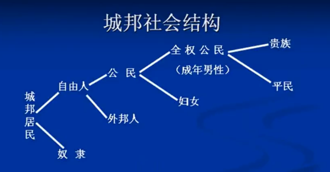
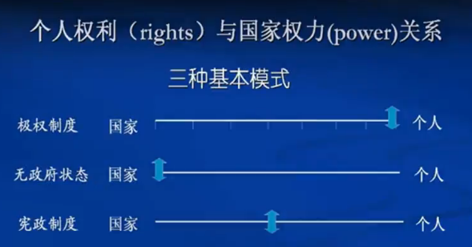
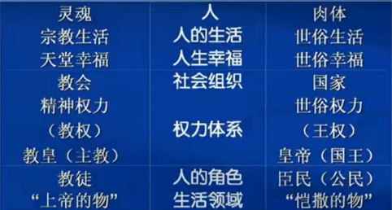
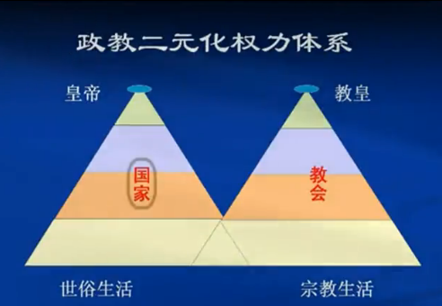

西方文明对中华文明的影响
从15世纪末期开始, 西方文明开始向外扩散, 而在19世纪中期, 兵临城下, 对中华文明提出了生死的挑战. 经过了一百多年, 西方文明已经渗透影响到中华文明的方方面面.
西方的宗教
基督教最早从明朝开始就有传教士来传教, 但是当时给西方传教士留下的印象是中国人的传统宗教大多是多神论, 很难理解西方的一神论, 和三位一体. 而在新中国成立之初的50-70年代, 基督教几乎在中国大陆绝迹, 直至改革开放才开始开放宗教, 给了宗教一定的自由. 经过三十年的发展, 目前中国基督信仰已经接近十分之一
西方的技术文明
从电话电视到手机电脑, 几乎现代生活的全部资源都来自于西方.
但是我们要知道, 西方文明最初传入中国的时候是极其艰难的, 因为大部分特别是统治阶级对西方文明有排斥心理.
最初英国人在上海修了一个小火车道, 清政府对此很恐慌, 连忙花了几十万白银卖了下来, 又把铁轨拆掉, 把火车扔进海里. (尼玛真是有钱任性啊) 后来李鸿章在唐山修了一个窄轨火车, 遭到朝政大部分的反对, 原因是唐山离东陵很紧, 火车的响声会惊扰地下的先祖亡灵…结果朝廷下令, 火车不能用发动机来拉动, 只能用骡子或者马.
西方的文学艺术
从莎士比亚到交响乐, 从好莱坞大片到百老汇歌剧, 中国不断地在欣赏和吸收西方的艺术元素. 把油画技巧融入到国画里面
西方的法律文明
中国今天的司法, 大多数来自罗马法而不是大清律. 而我们的婚姻法, 合同法, 和西方几乎没多少区别, 而和传统的法律已经完全不同了.
西方的政治文明
这是今天中国唯一没有完全接受的部分.
从柏拉图的理想国, 到犬儒学派, 到早期基督教, 到中世纪基督教, 到摩尔的乌托邦, 再到三大空想社会主义者, 直至马克思主义, 西方有悠久的社会主义思想传统, 但是中国没有. 所以我们常说的中国特色社会主义, 无产阶级专政, 是来自西方的. 就连我们常说的政协人大, 那是西方议会的一种变体. 而今天中国政治文明的建设, 两个核心的目标是民主和法治, 这都不属于传统文化的内容
而西方政治文明中, 我们仍未不接受的是: 西方的多党民主, 西方的三权分立, 西方的司法独立, 西方的军队国家化
西方政治的重要内容
推荐读物:
《论古典自由主义的精神》
《代议制思想的起源》
《古希腊人的公民观念》
《西方政治法律传统与人权学说》
《基督教二元政治观与近代个人主义》
《消极国家观: 从基督教到古典自由主义》
《中世纪政治思想的特质》
《古代人的自由与现代人自由之比较》
《读<美利坚合众国宪法>及<宪法第一修正案>》
个人主义, 西方政治文明的精髓
除西方文明之外的文明, 普遍羞于承认个人主义, 而强调整体主义. 也正因如此, 西方文明在向外扩散时与其他文明相冲突. 在西方, 它是一面旗帜, 是西方文化的核心价值
在西方被视为最重要的价值, 在世界范围内最不重要
— 亨廷顿《文明的冲突与世界秩序的重建》
一种文明的发展和演变的过程中, 都会建立一种文化机制来压抑人的本能和欲求, 以此来维持一定的社会秩序. 唯有西方文明一方面承认个人的本能和欲求的合法性, 另一方面通过特殊的文化机制的调节, 来保证文明的有秩序的生活
市场经济是对每个人致富欲求的承认和合法化, 民主政治是对每个人对权力欲求的承认和合法化,
而基督教是对个人灵魂的拯救, 而宪政是对个人权力的保障, 而西方的生活方式, 是满足个人对幸福的追求, 个性自由的实现
独立的个人是社会的本原和基础
整体主义的观念, 每个人是社会这个有机体的一个细胞, 个人只有融入到整体中, 承担其相应的职责, 才能实现个人价值. 也就是说整体是本原, 是第一位的
个体主义的观念, 只有个人, 而国家和社会是第二位的. 国家和社会的建立就是为个人而服务的, 实现和保障个人的自由与利益.
个人是社会的终极价值
整体主义认为国家是本原, 个人是工具
个人主义认为之所以建立国家就是为个人服务的
所以整体主义其实就是为统治阶级服务的, 它强调了人的价值在于能够成为统治者的工具, 满足统治者的需要
康德: 人是目的
所有的人都是独立, 自由和平等的
古希腊和罗马时期的民主是少数人的民主, 平等也局限在同一等级之间的人之间
而随着历史演变, 这种民主逐渐发展成全民的民主, 平等也逐渐涵盖到抽象的”人”的概念上, 不区分国籍, 地域和精神信仰
个人主义的表现
- 自由, 平等, 人权是对个人的政治诉求
- 民主是对个人的尊重
- 宪政是对个人的制度保障
- 市场经济是对个人经济追求的承认与规范
- 基督教是个人灵魂的拯救
- 文学艺术是个性的表现(个人体验, 情感, 意志, 理想等的表现或表达)
- 科学是个人的求知活动(满足好奇心)
- 生活方式是个人对幸福的追求
西方文化对其它文明的冲击和渗透主要表现在它瓦解传统的社会纽带, 使社会越来越个体化
民主
雅典的城邦民主
谈到西方的民主, 自然要从2000年前的古希腊开始. 当时在城邦(city-state)制度下, 雅典 最先创立了民主制度(城邦民主, 直接, 狭隘)

这种民主的基本思想是每一个公民都必须要为城邦负责, 如果你做不到这一点, 公民大会就会剥夺你的公民权. 比如城邦时代小型战争很多, 所以要求每个公民都要养好一匹马来应对战争需要(贵族需要养三匹马, 有的要给他的奴隶们用) 如果没伺候好马, 把它养瘦了, 那你就没公民权了.
当然在要求公民尽义务的同时, 城邦也给公民提供了丰富的公共生活.
- 公职津贴制度: 参加公共事务(公民大会, 陪审法庭, 担任公职, 观看歌剧) 都能拿到一份不菲的报酬
- 抽签选举制度: 国家的公职, 除了十位将军和一个最高财政官之外, 均向公民开放
雅典时期公民对政治参与, 度在广度和深度上, 现在没有任何一个国家能够达到. 但这只是少数人的民主
古罗马的共和制度
这种共和意味着, 其最高官员由公民民主选举产生, 实行卸任制. 而贵族和人民共同行驶权力, 管理国家. 但实际上这种共和更像是一种混合政体:
- 执政官(君主制元素)
- 元老院(贵族制元素)
- 人民大会(民主制元素)
到了罗马后期, 元老院成员实际上都是原先民主选举产生的退休的那部分人, 贵族势力在渐渐衰弱
中世纪封建时代
在中国, 我们往往都说封建专制, 因为封建时代都是专制的. 但在西方并非如此. 西方的封建社会, 其典型制度不是专制, 而是代议制的民主(日耳曼人创造)
代议制民主(间接民主)的基本原则:
- 日耳曼传统: 社会共同体是权力的最终源泉, 就是说国王大于每一个公民, 而每一个公民形成的共同体大于国王, 国王不能撇开法律, 撇开代议机构独断专行
- 民主的基本原则: 来自罗马法, 但凡关涉到大家的事要得到大家的统一, 管理者由其管辖的人投票产生, 法律的指定由受这部分法律约束的人来决定
- 代议制的制度: 当行政范围扩大到一定程度之后, 就必须实行间接民主, 以选派代表的方式来行使社会共同体的权力
现代民主
公民扩大的轨迹:
贵族
-> 富人 (取消等级身份限制)
-> 有产者 (降低财产资格)
-> 全体白种男人 (取消财产资格)
-> 加入黑人等少数族群 (废除种族限制)
-> 妇女 (取消性别限制)
现代民主的特点:
- 以民族国家(nation-state)为背景, 而不是以往的城邦, 帝国
- 以独立, 自由和平等的个人为基础
- 政治权利的普遍性和平等性(全民的民主)
- 以法治和对人权的保障相结合
- 以多党制, 公民社会, 自由的媒体为支撑
代议制民主的核心特征:
民有, 民治, 民享的政府
Government of the People, by the People, for the people
其中by the people才是关键
宪政
西方政治文明的核心内容, 它在所有非西方文明中都没有出现过, 是西方文明独有的东西通过宪法的形式, 规范和限制国家权利(power), 保障人民的权利(rights)
宪政的关键要素:
- 宪法: 不同于一般法律, 它是国家法律体系中处于最高地位的法, 是其他法的基础, 相当于国家或政体的基本契约
- 国家权力和个人权利的区分与对立
- 国家权力是有限的, 由人民授予, 法律规范
- 人民的某些权利是不可侵犯的
宪法的历史渊源
- 古希腊罗马的法治传统
- 中世纪日耳曼人的习惯法传统
- 中世纪封建主义的契约传统
- 英国的普通法传统
- 基督教的传统
汤因比把基督教比作为西方文明的蛹, 一切的政治体系, 经济制度都在此中孵化而出. 古希腊和罗马文明唯有经过基督教的重新塑造后才产生了现代西方文明
基督教对于宪政文明而言, 贡献了两方面内容: 价值观念的变革 和 全新的世俗权力结构
前者:
- 超越主义的价值取向, 人生而为人, 不论是生理上的健康长寿, 还是权利物欲上的理想抱负撒谎功能的追求, 这些都是世俗层面的, 而基督教不满足于此, 期望垂直的向上超越, 使自己的精神境界升华接近神, 提升精神境界. 就是说哪怕你追求更好的自己成为了圣人, 那也还是人啊, 而基督教则追求向神看齐.
- 超越凡俗生活和生命的有限性: 早期基督徒的观念, 人来到世界上就是来赎罪的, 而几十年的世俗生活则是走向天国的一段旅途. 人生来就被判了死刑, 终有一死, 但基督徒的信仰不甘心于有限的生命, 要超越生命的有限性, 实现精神生命的永恒, 强调的是一种精神归宿
- 上帝选民的观念: 基督徒受洗入教, 便成了上帝的选民, 将来他们会成为天国的公民
- 对国家权力的不信任和双重忠诚: 原罪是我们与生俱来的, 是人性结构的缺陷. 而国家就是对罪的惩罚和补救(对人罪性的扼制)
- 在上有权柄的, 人人当顺服他. 基督教神化王权, 同时反对神化当权者, 因为当权者和普通民众一样, 都是负罪的俗人
教师, 工程师, 科学家, 艺术家, 音乐家, 这些都是人性的骄傲, 唯有政府是人性的耻辱. 因为政府是扎根在人性有缺陷的基础上的, 我们需要政府就是因为人的本性有缺陷. 建立国家, 其实是两害相权取其轻. 权力导致腐败, 绝对的权力绝对腐败. 人本身就是有缺陷的, 一旦掌握了一定的权力, 就会受到加倍的诱惑, 而在诱惑面前人性的缺陷则被加倍放大
权力是恶的, 人性也是恶的, 或许以恶制恶, 化恶为善才是最佳实践. 比如西方民主制度里的分权制衡, 就是基于以权力制约权力, 以野心来对抗野心. 也像市场经济里那样, 每个人都为个人利益思考, 但如果市场机制是健康的, 每个人都为各自的生活而奔波而奋斗, 那结果就是大家间接的都对社会这个整体做出了贡献, 推动社会的发展, 这就是化恶为善啊
二元政治观与二元化权力体系
教会与国家双雄并立, 一方面教会在世俗社会承担一定责任, 掌控精神权力和宗教生活领域, 并以社会道德权威的名义对世俗统治者进行监督, 另一方面, 国家满足世俗的角色, 同时


关于政权和王权, 历史上既有教权吞没王权(伊斯兰乌玛), 也有王权碾压教权(各种军事帝国), 但更为典型的是政教对立的模式

自由
自由是西方人的一个重要的价值观, 也是西方社会的一面旗帜, 西方人称他们生活的社会为自由世界. (freedom is not free)
政治自由
政治上的自主或自治, 指公民对公共政治生活的参与. 在古希腊时期, 如果你服从一个具体的人, 那你就是奴隶. 所谓的自由人不服从任何具体的人, 只服从于抽象的公共权威
个人自由
个人的独立, 指个人生活中的某些领域(权利)不受国家权力的干预和侵犯
自由的三要素(洛克提出):
- 守法
- 法律未禁止则不受干预
法律是人民的理发机关制定的,
目的是保障自由而非限制和取消自由英国 –> 只要法律不禁止的就算允许的
德国 –> 只要法律禁止的就是不允许的
法国 –> 即使是法律禁止的也是允许的
苏联 –> 即使是法律允许的也是禁止的
消极自由要求国家不侵犯便是自由(libary from)
积极自由非但如此还要求国家尽力满足个人主观意志, 要为个人的自由而创造条件(libary to)